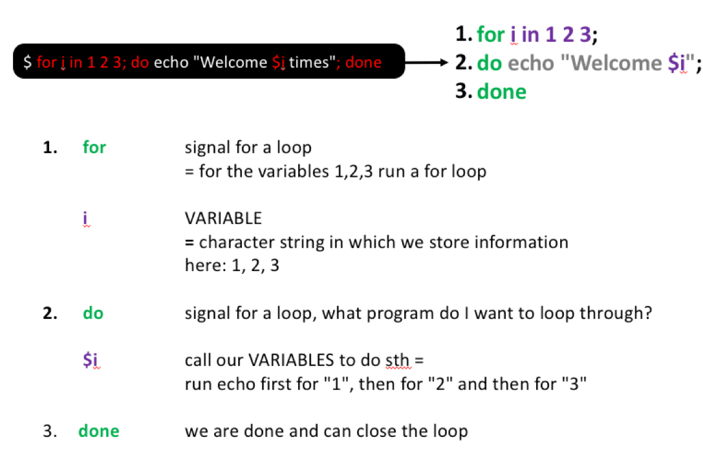
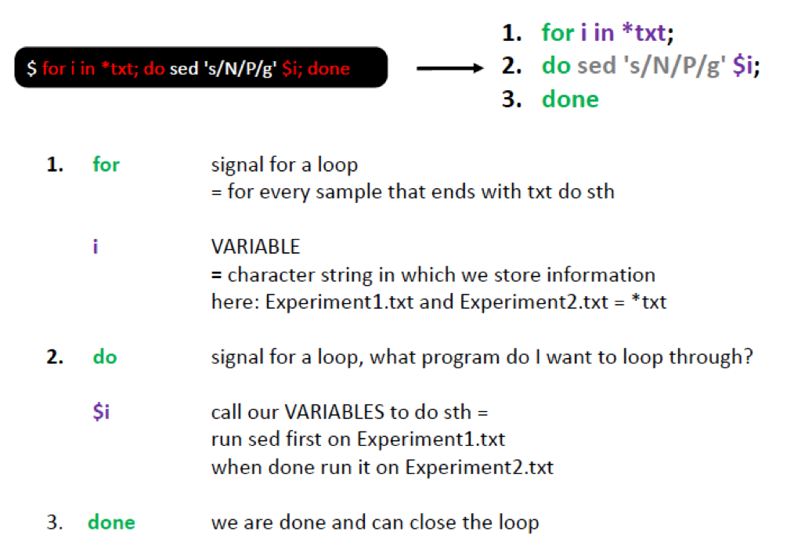
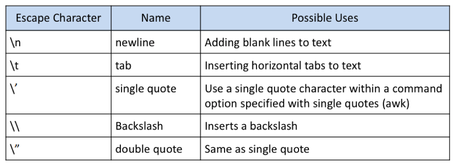

# Print a line of text using echo
echo "Hello everyone"
# Print a line of text using printf
# printf does not add a new line at the end by itself, so we add one with \n
printf "Hello everyone\n"
# Print the value of the HOME variable
echo $HOMEShell features and long jobs
Tip
New to the command line? The Getting started with bash and an HPC tutorial explains these commands step by step. This page is a reference: it lists the key commands with short examples.
Quick reference
| Command | What it does | Example |
|---|---|---|
echo, printf |
Print text or the value of a variable | echo "$HOME" |
NAME=value |
Store a value in a variable | MY_NUMBER=10 |
export |
Make a variable visible to programs you start from this shell | export MY_NUMBER=10 |
for ... do ... done |
Run the same command for many files | for i in *.txt; do wc -l $i; done |
chmod |
Change the access rights of a file or folder | chmod g+rw file.txt |
screen |
Keep a command running after you log out | screen -S myrun |
The examples on this page use the files downloaded in Working with text files.
Variables
A variable is a name that stores a value, for example a file name, a path or a number. Environment variables are variables that the shell sets up when you log in. For example, $HOME holds the path to your home directory.
echo/printf: Printing text and variables
Both echo and printf print something to the terminal. However, echo works slightly differently across shells, so you might get slightly different outputs depending on the shell you use. Printf is more portable and allows for more formatting options. You might encounter both when finding code in the wild.
Making your own variables
You can easily make your own variables and use them to store file names, paths or whatever you want. Notice that there are no spaces around the =:
MY_NUMBER=10
# Check that this worked
echo "My math number: $MY_NUMBER"
# Use a variable in a command, exactly like you would use the value itself
MY_FILE=downloads/Experiment1.txt
wc -l $MY_FILEA variable made like this only exists in your current shell. Programs and scripts that you start from this shell can’t see it. If they need the variable, use export:
export MY_NUMBER=10Both kinds of variables are gone when you close the terminal.
For-loops: Running the same command many times
A for loop runs the same command for each item in a list, e.g. for each file in a folder. For a step-by-step explanation, quoting, while loops and common errors, see For-loops in bash.
for i in 1 2 3; do echo "Welcome $i times"; doneHere, you see what this command does step by step:

Looping over files
Assume that instead of nitrogen (N) we measured sulfur (S). We can replace it in all text files as follows:
# Replace N with S in all txt files and print the result to the screen
for i in downloads/*txt; do sed 's/N/S/g' $i; done

To store the output in new files, add a new ending to each file name:
for i in downloads/*txt; do sed 's/N/S/g' $i > ${i}_2.txt; done
# Check that the new files were created
ls -l downloads/*txtThe curly brackets in ${i}_2.txt mark where the variable name ends. Without them, bash would look for a variable called i_2, which does not exist.
Looping over a list of names
The output names above are not ideal, e.g. downloads/Experiment3.txt_2.txt. To get more control over the names, loop over a file that lists the names you want to work with, one name per line:
printf "Experiment1\nExperiment2\n" > downloads/FileList
# Check the file: we expect 2 lines
head downloads/FileList
for i in `cat downloads/FileList`; do sed 's/N/S/g' downloads/${i}.txt > downloads/${i}_2.txt; done
# Check that the new files were created
ls -l downloads/*txtNotice that we now need to add the file extension in the loop. However, the new file names, e.g. downloads/Experiment2_2.txt, are much cleaner.
Exercise
- Make a list with all the faa files (do this with the command line). Ideally, we want to have PF00900 and PF01015 in one column. For this you want to list the names of all faa files but at the same time remove the file extension and the folder name.
- Use this list to, in a loop, replace the GCA_ with Genome_. Store the files with the new ending
renamed.faa
Show the code
# Question 1
ls downloads/*faa | sed 's/downloads\///g' | sed 's/\.faa//g' > downloads/FaaList
# Check the list: we expect 2 lines, PF00900 and PF01015
cat downloads/FaaList
# Question 2
for sample in `cat downloads/FaaList`; do sed 's/GCA_/Genome_/g' downloads/${sample}.faa > downloads/${sample}_renamed.faa; done
# Check one of the new files
head downloads/PF00900_renamed.faaAccess rights
Each file (and directory) has associated access rights, which you can see with ls -l. ls -l also shows the owner and the group of each file. ls -lg hides the owner and only shows the group:
ls -lg downloads/Experiment1.txt-rw-r--r-- 1 staff 156B Sep 28 2019 downloads/Experiment1.txt
In the left-hand column is a 10 symbol string consisting of the symbols d, r, w, x, -, and, occasionally, s or S. If d is present, it will be at the left hand end of the string, and indicates a directory: otherwise - will be the starting symbol of the string.
The 9 remaining symbols indicate the permissions, or access rights, and are taken as three groups of 3.
- The left group of 3 gives the file permissions for the user that owns the file (or directory)
- the middle group gives the permissions for the group of people to whom the file (or directory) belongs
- the rightmost group gives the permissions for all others.
The symbols r, w, etc., have slightly different meanings depending on whether they refer to a simple file or to a directory.
Access rights for files
- r (or -), indicates read permission (or otherwise), that is, the presence or absence of permission to read and copy the file
- w (or -), indicates write permission (or otherwise), that is, the permission (or otherwise) to change a file
- x (or -), indicates execution permission (or otherwise), that is, the permission to execute a file, where appropriate
Access rights for directories
- r allows users to list files in the directory;
- w means that users may delete files from the directory or move files into it;
- x means the right to access files in the directory. This implies that you may read files in the directory provided you have read permission on the individual files.
So, in order to read a file, you must have execute permission on the directory containing that file, and hence on any directory containing that directory as a subdirectory, and so on, up the tree.
If you try to open or change a file without the right permission, you get the error Permission denied. If the file belongs to someone else (check the owner column of ls -l), you can’t fix this yourself. Ask the owner to give you access.
Changing access rights
We can use chmod to change who has access to our files.
Chmod options:
u = user
g = group
o = other
a = all
r = read
w = write (and delete)
x = execute (and access directory)
+ = add permission
- = take away permission
= = set exactly these permissions (and remove all others)
For example, to give the group (i.e. g) read, write and execute permissions on the file example.txt, type:
chmod g=rwx example.txtTo remove read write and execute permissions on the file example.txt for the group and others (i.e go), type:
chmod go-rwx example.txtscreen: Running things in the background
Screen or GNU Screen is a terminal multiplexer. This means that you can start a screen session and then open any number of windows (virtual terminals) inside that session.
Processes running in Screen will continue to run when their window is not visible even if you get disconnected. This is perfect, if we start longer running processes on the server and want to shut down our computer when leaving for the day. As long as the server is still connected to the internet, your process will continue running.
# Start a screen and give it a name
screen -S testrun
# Detach from the screen (leave it, while it keeps running): press Ctrl+A, followed by D
# List all running screens
screen -ls
# Go back into an existing screen
screen -r testrun
# Close and remove the screen: type this while you are inside the screen
exitOn an HPC, run long jobs through the job scheduler instead, see Start working on an HPC.
Escaping characters
Certain characters are significant to the shell; Escaping is a method of quoting single characters. The escape (\) preceding a character tells the shell to interpret that character literally. Below, we find the special meanings of certain escaped characters:
